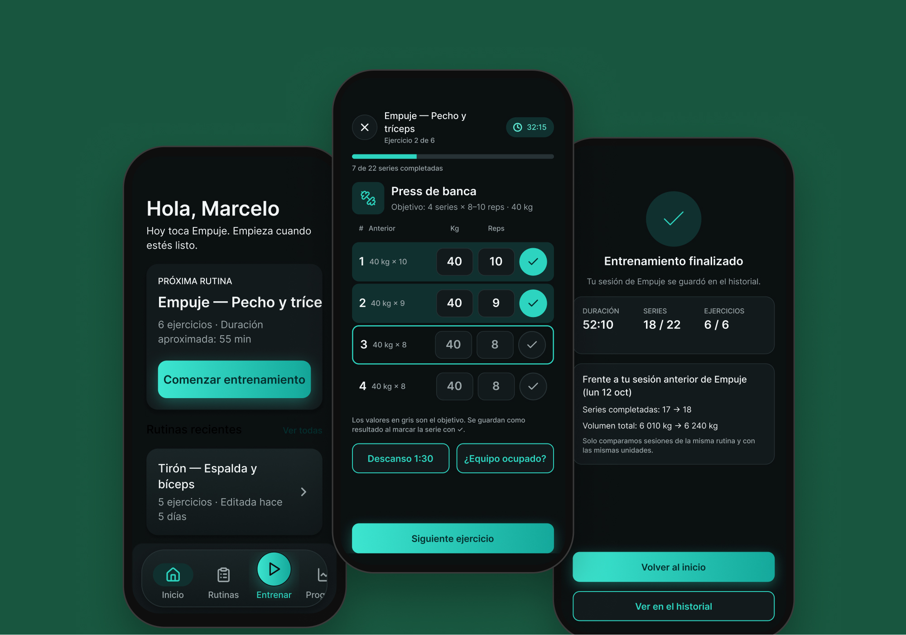
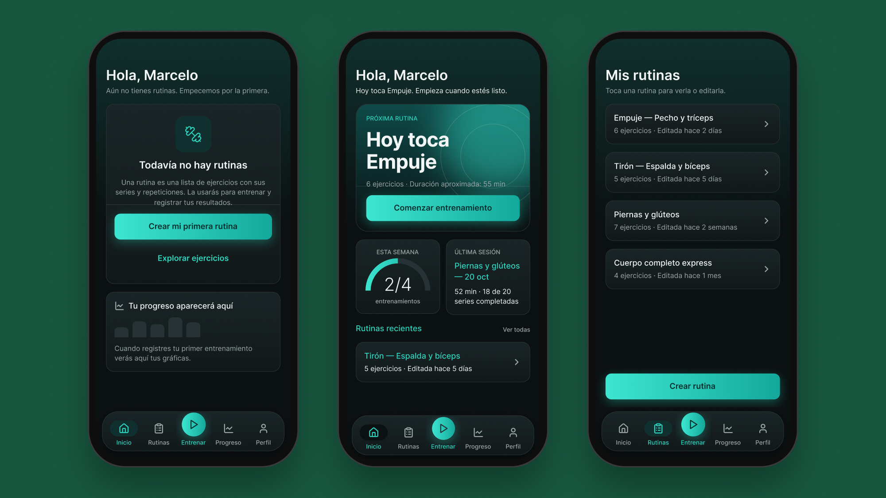
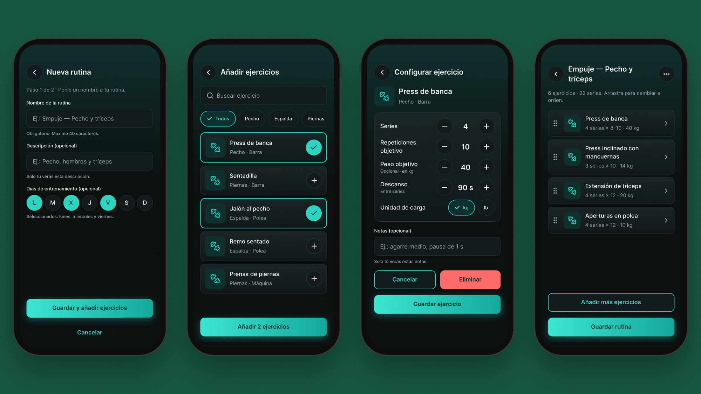
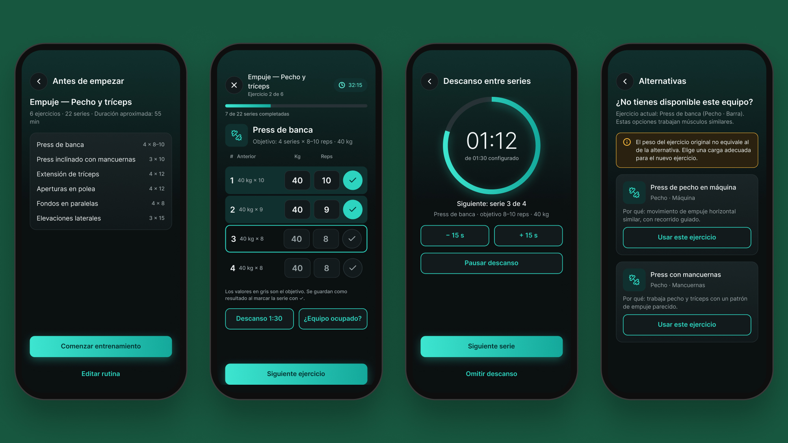
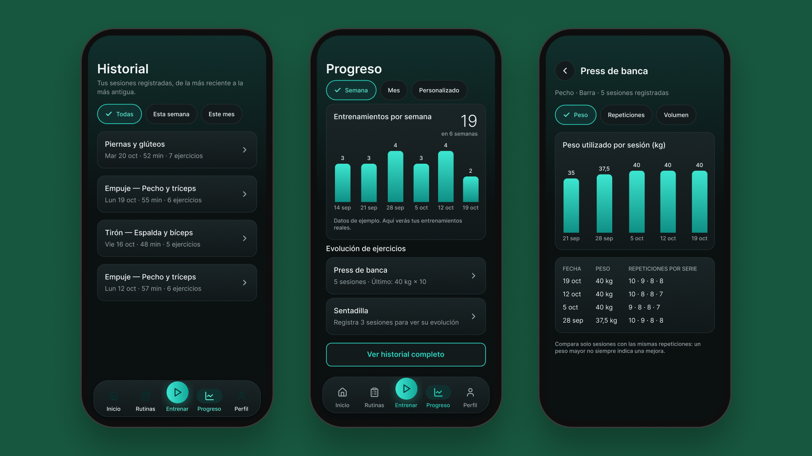
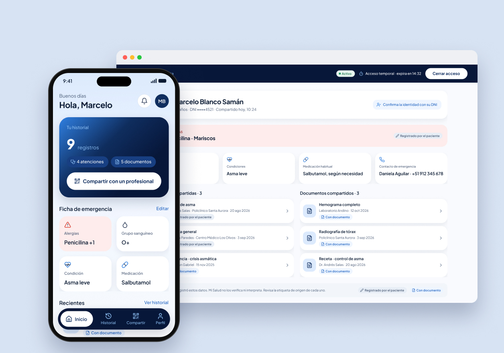

PULSO
Una app de entrenamiento que el gimnasio ofrece a sus miembros para registrar series y cargas durante la rutina, sin depender de la memoria ni de las notas del celular.
Rol
Diseñador UX/UI · proyecto personal
Tipo
Propuesta de diseño · sin validar con usuarios
Alcance
App móvil · 46 pantallas y prototipo navegable
Duración
1 semana · Figma

(01) Contexto y problema
El punto de partida
Cuando quería medir mi progreso en el gimnasio, no recordaba qué peso ni cuántas repeticiones había hecho la vez anterior. Terminé anotándolo en las notas del celular, algo poco práctico en medio de una rutina.
Pregunta de diseño
¿Cómo podría alguien registrar su progreso durante la rutina, serie a serie, sin depender de la memoria?
Hipótesis de negocio
Me pasa a mí y a personas cercanas. Una de ellas paga una suscripción aparte para registrar sus entrenamientos, cuando el propio gimnasio podría incluir esa herramienta en su membresía. De ahí el modelo: el gimnasio ofrece la app y sus miembros la usan.
Basada en experiencia propia y cercana · pendiente de validar
(02) Usuario y alcance
Diseñada para usarse entre serie y serie
01
El momento de uso
Quien entrena anota cada serie y su peso justo al terminarla, con una o dos manos, sin salir de la rutina.
02
Lo que quedó fuera
Red social, chat, reservas e IA. No son determinantes para registrar el progreso; una comunidad podría sumarse en una versión futura.
03
Pedir solo lo necesario
Onboarding corto y omisible, sin datos físicos ni ubicación: no hacen falta para el uso principal.
(03) Decisiones de diseño
Ocho decisiones para entrenar sin fricción
01
«Entrenar» al centro
La app se abre sobre todo cuando la rutina ya empezó y se quiere ir marcando el progreso; por eso esa acción es la más visible de la navegación.
02
Sin barra durante la sesión
En plena rutina la prioridad es el ejercicio, el cambio de máquina y el registro. Más opciones serían una distracción.
03
Objetivo en gris, resultado real con ✓
El objetivo es una meta a mediano o largo plazo; el resultado es el progreso de hoy. Confirmar la serie activa la siguiente.
04
Copiar la serie anterior
Repetir la última serie para sostener el ritmo es habitual, así que se puede copiar con un toque sin darla por hecha.
05
Empezar desde una rutina guardada
Antes de entrenar, el usuario elige una rutina ya creada en lugar de armarla desde cero, y así puede comparar su progreso sesión a sesión.
06
Alternativas sin equivalencia de carga
Si un equipo está ocupado, la app sugiere otros ejercicios, pero no calcula cuánto peso usar: no existe una equivalencia general y darla sería irresponsable.
07
Constancia sin culpa
La frecuencia semanal informa sin presionar. Un día de descanso o un imprevisto no deberían hacer sentir mal a nadie.
08
Sin tendencias con pocos datos
Con pocas sesiones las tendencias varían demasiado y no ayudan. La app muestra los datos y el usuario decide según sus propios objetivos.
(04) Inicio
La pantalla más trabajada
Muestra la próxima rutina con su acceso directo, las rutinas recientes, la última sesión y la semana en curso. Tiene un estado vacío propio para quien todavía no creó ninguna rutina.

(05) Flujo · Crear una rutina
Del nombre al primer ejercicio
01
Nombra la rutina
02
Busca en la biblioteca
03
Configura series y carga
04
Ordena y guarda

A
Solo dos pasos
Nombre y ejercicios: es todo lo que necesita una rutina. Campos como «cómo te sentiste» no afectan lo principal y podrían confundir.
B
Filtrar por zona del cuerpo
Mucha gente no conoce el nombre de cada ejercicio, pero sí sabe si busca pecho, espalda o pierna. La biblioteca combina búsqueda y filtros.
(06) Sesión y progreso

Resumen previo
Entrenamiento activo
Descanso entre series
Alternativas de ejercicio

Historial de entrenamientos
Panel de progreso
Progreso de un ejercicio
(07) Sistema de diseño
01
Componentes para lo que se repite
Lo que aparece una y otra vez —filas de serie, tarjetas de rutina, botones, navegación— es un componente. Gané consistencia y rapidez al diseñar pantallas nuevas.
02
Jerarquía que guía
La cuadrícula de 8 px, las áreas táctiles amplias y los botones grandes ordenan la pantalla y llevan la vista a lo importante.
03
Errores según lo que está en juego
El patrón —toast, banner, pantalla o confirmación— depende de qué tan importante es la función afectada.
(08) Validación y límites
01
Sin pruebas con usuarios todavía
El prototipo no se ha probado. El siguiente paso es una prueba de usabilidad con Maze sobre los flujos principales.
02
Imágenes provisionales
La biblioteca de ejercicios usa miniaturas temporales que deben reemplazarse por un set visual coherente.
03
Datos de ejemplo
Nombres, fechas y gráficos son ficticios y no representan resultados reales.
(09) Aprendizajes
Lo que haría distinto: definir la identidad de la app antes de diseñar la primera pantalla.
La propuesta visual cambió varias veces porque no tenía una idea clara de la marca desde el inicio. En el camino aprendí a trabajar con estilos y variables, para poder ajustar la paleta sin rehacer cada pantalla. Es la parte del proyecto que más quiero fortalecer.
Siguiente proyecto
